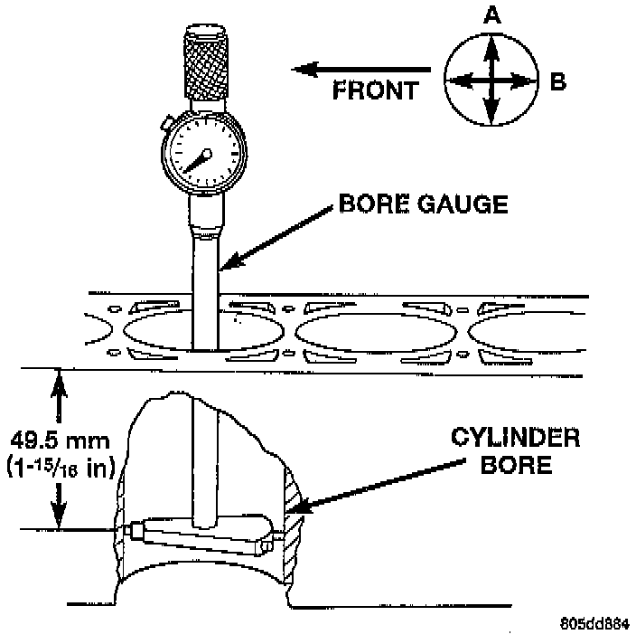

Fitting Pistons

PISTON FITTING
1. To correctly select the proper size piston, a cylinder bore gauge, capable of reading in 0.003 mm (0.0001 inch) INCREMENTS is required. If a bore gauge is not available, do not use an inside micrometer.
2. Measure the inside diameter of the cylinder bore at a point 49.5 mm (1-15/16 inches) below top of bore. Start perpendicular (across or at 90 degrees) to the axis of the crankshaft at point A and then take an additional bore reading 90 degrees to that at point B.
3. The coated pistons will be serviced with the piston pin and connecting rod pre-assembled. The coated piston connecting rod assembly can be used to service previous built engines and MUST be replaced as complete sets. Tin coated pistons should not be used as replacements for coated pistons.
4. The coating material is applied to the piston after the final piston machining process. Measuring the outside diameter of a coated piston will not provide accurate results. Therefore measuring the inside diameter of the cylinder bore with a dial Bore Gauge is MANDATORY. To correctly select the proper size piston, a cylinder bore gauge capable of reading in 0.003 mm (0.0001 inch) increments is required.
5. Piston installation into the cylinder bore requires slightly more pressure than that required for non-coated pistons. The bonded coating on the piston will give the appearance of a line-to-line fit with the cylinder bore.
PISTON SIZE CHART
Cylinder Bore Size: Piston Letter Size
98.438 to 98.448 mm (3.8755 to 3.8759 inch): A
98.448 to 98.458 mm (3.8759 to 3.8763 inch): B
98.458 to 98.468 mm (3.8763 to 3.8767 inch): C
98.468 to 98.478 mm (3.8767 to 3.8771 inch): D
98.478 to 98.488 mm (3.8771 to 3.8775 inch): E
98.488 to 98.498 mm (3.8775 to 3.8779 inch): F